/math-a3904f143141153cc70766aff62f962c.png "n\!") sei der Stichprobenumfang und
sei der Stichprobenumfang und /math-2fccdd06e4c2b79e4f65f2f532fdf9ec.png "n_{1}\!") die Anzahl der Ereignisse bzw. Erfolge. Der Stichprobenanteil 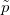 kann dann ausgedrückt werden mit: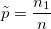
die Anzahl der Ereignisse bzw. Erfolge. Der Stichprobenanteil 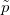 kann dann ausgedrückt werden mit: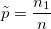Inhalt |
sei der Stichprobenumfang und die Anzahl der Ereignisse bzw. Erfolge. Der Stichprobenanteil 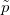 kann dann ausgedrückt werden mit: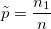
/math-2225a33c170f19586f1ee1de06e36962.png "p\!") sei der Stichprobenanteil und
sei der Stichprobenanteil und /math-98a2a58d47208a196dce8aebf1187a7b.png "p_{0}\!") der hypothetische Anteil. Diese Funktion testet die Hypothesen:
der hypothetische Anteil. Diese Funktion testet die Hypothesen:
/math-e6439f7e3ffa3e9be5825528b7bd98ca.png "H_0:p=p_{0}\!") vs. 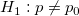 für einen beidseitigen Test.
vs. 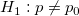 für einen beidseitigen Test.
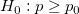 vs. 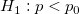 für einen unteren Test.
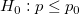 vs. 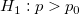 für einen oberen Test.
Wenn 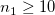 und 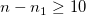, können Sie einen p-Wert mit Hilfe der Normal-Approximation einer Binomialverteilung berechnen. Um den Test durchzuführen, berechnen Sie den Wert für /math-814b9f64b478b6caf94e723a0e6814c5.png "z\!") und 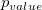:
und 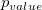:
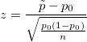
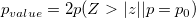für beidseitigen Test
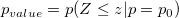, für oberen Test
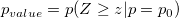, für unteren Test
Für ein Konfidenzniveau gleich /math-378df00d12056b404d7d02aef9d8650b.png "1-\alpha") kann das Konfidenzintervall für den Stichprobenanteil erzeugt werden durch:
kann das Konfidenzintervall für den Stichprobenanteil erzeugt werden durch:
| Nullhypothese | Konfidenzintervall |
|---|---|
|
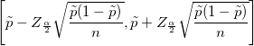 |
| 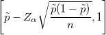 | |
| 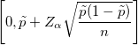 |
In Origin basiert der exakte Test von einem Anteil auf dem Binomialtest.
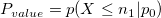
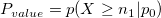
:
Sei 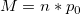,
wenn 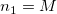 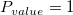
wenn 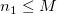 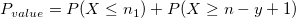, wobei y die Anzahl für z ist, so dass 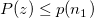 und 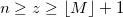
wenn 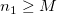 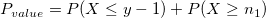, wobei y die Anzahl für z ist, so dass und 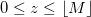
Exaktes Konfidenzintervall: Konfidenzniveau ist
| Nullhypothese | Konfidenzintervall |
|---|---|
|
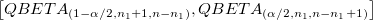 |
|
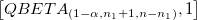 | |
|
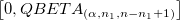 |
wobei 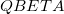 die Quantilfunktion der Beta-Verteilung bezeichnet.